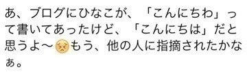

2015/0130Fri傷つけずには愛せない
みなさまこんばんわ！
日奈子だよー٩(◦`꒳´◦)۶♪
日奈子とまいちゅんは
何でも似ている
性格とか顔じゃないよ
なんでも、同じになるの！
自然と！
お披露目も
アンダーライブの原点である
牛久ライブも
他にもいっぱい。
真似っこされてるんだ
日奈子のブログね、友達がブックマークして見てくれてるんだって！
小学校の時の担任の先生も時間があるとき見てくれてるらしい♪
先日こんなメールが届いたの！

あちゃ～( ºΔº )笑
でもね、実は小学生の時も同じこと言われたの！笑
日奈子のブログ誤字脱字とか多いし
言いたいことを詰め込もうとして、「、」とか「。」が少なくて読みにくかったり、文がめちゃくちゃだったりで、
読みにくいブログなのに
毎回読んでくださり、コメントもたくさんきていてとっても嬉しいです！
毎回文字が多いブログとか、～がありました。っていうブログばかりじゃ
つまらないと思うから、今年はブログの使い方を工夫して見ようかな！と、思います！
っていっても、まだどうゆうブログ書いたりするか悩んでるけど。。。
みなさんはどんなブログが読みたいですか？何か意見があったら、教えてほしいです！よろしくお願いします！
格差社会コンビと
運命共同体
(運命共同体は、いま勝手に思いつきました。笑)
この間、まいちゅんかりんじゅんなとカラオケいったの！楽しかった！
お知らせです！今日発売の月刊エンタメさんの、
乃木坂46 U-18 友情対談というコーナーにあっしゅんとのインタビューが載っています！
私とあっしゅんのインタビュー
みなみおなのインタビュー
乃木坂の仲良し組がそれぞれいろいろな仲良しエピソードを話したよ！
お仕事で仲良しの話しを、聞いてもらえる。なんて楽しいんだ♡笑
初めて話した時とかのことも話したんだけど、正直本当にここまで仲良しになれると思ってなかったです！
今じゃ、あっしゅんは私の癒しであり、大事な相談相手であり、私のことを全部知ってくれてる数少ない人の中の一人です。
会って話すと、話したいことがどんどん溢れてきてずーっとしゃべりっぱなしです！メロンソーダがあれば何時間でもしゃべってられるよね！笑
しゃべってたい！
あっしゅんに、先輩でしょ～！って言った時にいやいや後輩だろっ！って返されるやりとりをよくやるんですけど、
その食い気味に突っ込んでくるあっしゅんが可愛くて面白いです。笑
はやく、お買い物いこうね♪あっしゅんが欲しいものは知ってるけれど、自分が何欲しかったか忘れちゃった( ºΔº )笑
よく、チップかあっしゅんどっちかちょうだい！って言われるけど、絶対絶対どっちもあげないんだからねっ！(｀・Д・´)がお
明日は握手会ですね♪10枚目の握手会も残り2会場となりました！
はやいですね。。。
乃木坂のイベントに追いつけない(´⊙ω⊙`)笑
これから、アルバムの特典とかもあってみなさんに会える機会が増えるからわくわく('∀`)♪
3周年ライブもあるし、風邪引かないよーに気をつけよう！
みなさんも気をつけてくださいっ！
卒業するために、今一生懸命学生に戻ってお勉強しています。。。笑
がんばります。。。。( ºΔº )
おやすみなさいっ！
2015/01/30 23:36


コメント(573)
元気してる？？？
ハムスターめっちゃ
可愛かったね＼(^o^)／
きいちゃんみたいに
小さかった。笑
まじハムスター羨ましい(｡-_-｡)
いいなぁ〜
たくさん可愛がってあげてね(*^^*)
あ、あとチップも
たくさん可愛がってよ( ´ ▽ ` )ﾉ
チップやきもち焼くからね！笑
京都、名古屋はやく
来ないかな〜(OvO)(OvO)
次はたくさんつむつむして
きいちゃんとたくさん
笑えるといいな＼(^o^)／
くだらないトークたくさんしようね！
今からめっちゃ楽しみだよ笑
南極から遠征するから
風邪引かんように予防するね！
きいちゃんも風邪引かんように
気をつけてね！＼(^o^)／
毎日大変だろうけど
結果は必ず出るだろうから
信じて頑張ってね(*^_^*)
まじで応援してます！
りゃ〜ん(OvO)
きいちゃんりゃ〜ん(OvO)
じゃあ寝ますね＼(^o^)／
おやすみなさい(*^_^*)
きいちゃんもはよ寝ろよ〜笑
題名かっこいいね(///_///)
ビッグサイト握手会だねいよいよ！
メッチャ楽しみ( •̀∀•́ )✧
黒のニット帽被っていくからよろしくね(っ´ω`c)♡
握手でたくさん話そう(*ﾉ´∀`*)
¶
( ˙灬˙ )
きいちゃんも応援してるよ！！
そろそろハムスターの名前決めないと！
31がもうすぐだよ！！
楽しみだぞいー
楽しみで今から眠れんぞ〜！！
待っとっててててててね！
まってた！！
だいすき！
明日お渡し会ぶりのきいちゃん！！
ハーフツインお揃いにしたーい\( ･o･ )/♡
1部からいるよ！！
れいぴよ
はぁー悲しい(´；ω；｀)
11枚目もあんまり行けないかも･･･
バイト頑張るね･･･(♡´艸`)
日奈子好きだよ(〃▽〃)ずっと日奈子推し！
今日寒かったね！
風邪引かんようにね！
明日も握手会頑張って！
俺は行けれんけど、、、
ホンマはめっちゃ握手したい！
7日まで我慢するけん、そこをめっちゃ楽しみにしとる！
いっつも癒されとるよ✨
相変わらずあしゅりんたむさんと仲良いねっ
運命共同体結成おめでとー！
学生かぁ〜懐かしいね笑
ロングも好きだったけど！
アルバムの特典、落選だったー(T . T)
これから忙しくなると思うけど、体調だけは気をつけて頑張ってね！
チップちゃん元気？きなこは元気すぎて困るよ。
ライブ楽しみにしてるね(*´-`)
握手会頑張ってね〜
ブログ更新ありがとう！
今日の握手会は学校終わってから速攻行くね！
めっっちゃ応援してます♡
すごくカラオケ楽しそう！！
乃木坂の曲も歌うのかな？
２期生で１番きいちゃんが好き♡
おんなじくらい、あしゅりんも好き♡
あしゅときいちゃんのツーショットがもっとみたーい！♡笑
ではでは、おやすみなさいです♪
テレビではめっちゃ笑顔で可愛い雰囲気で写真だとめっちゃ大人っぽい！
そのギャップが好き(￣▽￣)
受験終わったら握手いくね！
きいちゃーん(･∀･)
月刊エンタメ読みに行く！
ブログはその日何があったとかいろいろ知りたいかなぁ
たまにあるお茶目なブログも好き(^^)笑
きいちゃんに早く会いたーい♪
おれも文とか書くとき「、」とか「。」全然つけない笑笑一緒だね(^O^)
エンタメ今度買うね♪
おれも勉強と部活と乃木活がんばるね笑(^｡^)
二人のコンビだすきよ！
これからもラブラブでね♡
卒業だねーうちももう少しで卒業！！
はやかったあ(´；ω；`)
くるちゅん。
学業もお疲れ様です！
俺も後少しで学年末テストだから頑張らなきゃなって思ってる！
一緒に頑張ろーね笑
で、きいちゃん！握手会まだ行けないけど早く行けるようになったらいいなと思っております笑
ではでは(￣^￣)ゞ
ひなこだねー(笑)
誤字脱字が多い.....か〜。まぁいいんじゃない?それも個性さぁ〜(￣+ー￣)(ひとごと)
ふふw冗談(笑)頑張って直して成長きぃちゃんをみせてね(•̀ᴗ•́)و ̑̑
ﾃﾞﾜﾃﾞﾜｯ
こんばんは！！！
ブログ更新ありがとう！！！！
運命共同体ってなかなかネーミングセンスいいね！！！(≧∇≦)/
月刊エンタメ読んだよ！！！
感動！
お互いを大切にしてね！！！！
おやすみ！！！！
ひなこ(=ﾟωﾟ)ﾉ♡
明日の個別楽しみだよ〜(((o(*ﾟ▽ﾟ*)o)))
いろいろとやることが朝だけなんだけど、ひなこに会えるの楽しみにしてます(*´ω｀*)
大好き(((o(*ﾟ▽ﾟ*)o)))
僕も受験の真っ只中なのでお互い勉強頑張りましょう(＞人＜;)
うわぁぁぁ｡･ﾟ･(ﾉД`)･ﾟ･｡
きいちゃんに会いたさ(´・ω・｀)
今日､行けないから会えない。
更新ありがとー♪
運命共同体って名前いいと思う!!
お勉強頑張ってね♪
明日は宜しくね～（´ 3｀)
日奈子の夢が叶いますように(*^▽^)/★*☆♪
きいちゃんこんばんは！
まず一つ、真似っこされてるんじゃなくて、きいちゃんが実は真似してるんじゃない（笑）
あと、「そうゆう」はおかしいと思う。「そう言う」ならまだわかるけどね(￣▽￣)
口うるさくてごめん(>_<)
きんちゃん可愛い♡
きいちゃんも見てて何気無い言動が面白いww狙ってない笑いがあるのは才能だよね(*^^*)
どんなブログがいいかか～～イベントのこととかプライベートのこととかの話題多いと親近感沸いて読むのが楽しいかも！！
*･゜ﾟ･*:.｡..｡.:*･''･*:.｡. .｡.:*･゜ﾟ･*
小学校の先生からのメールとかほっこりする〜♡
きいちゃんは先生からも愛されてるんだねପ(⑅ˊᵕˋ⑅)ଓ
きいちゃんの人柄がいいからだね！！！
明日握手会いいな〜( ¯﹀¯ )♡
私はバイトだ。。。きいちゃんに会いたかった(´；ω；｀)
楽しんでね〜！！！
ブログはね、質問とかもたまにやってほしいな♬
ってことで、質問！！(笑)
きいちゃんの好きな洋服のお店は？♡
女の子向けのブログもたまーに、たまーーにでいいんで更新してほしいな♡(笑)
じゃ、またねー(∩^ω^∩)
*･゜ﾟ･*:.｡..｡.:*･''･*:.｡. .｡.:*･゜ﾟ･*
今日？？の握手会楽しみだよ(*´ω｀*)
たくさん楽しい話しようw
月刊エンタメ買ってしまったよ
コメントする